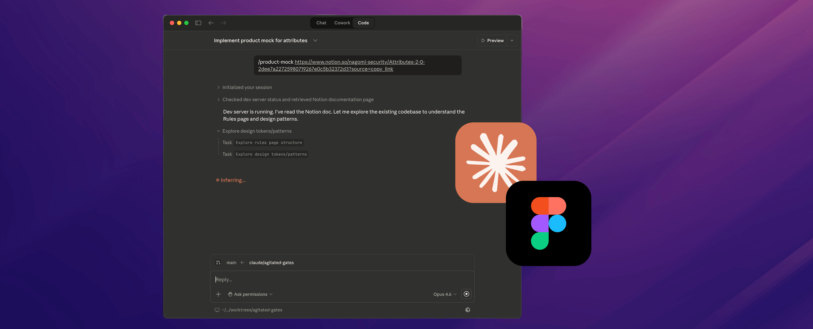
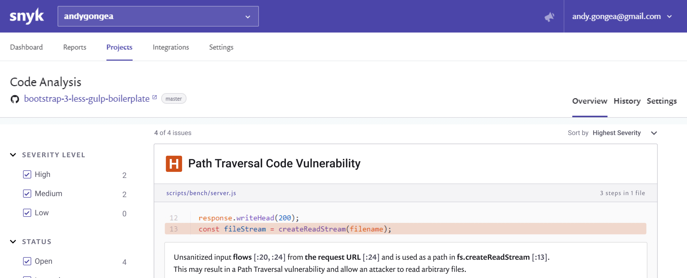
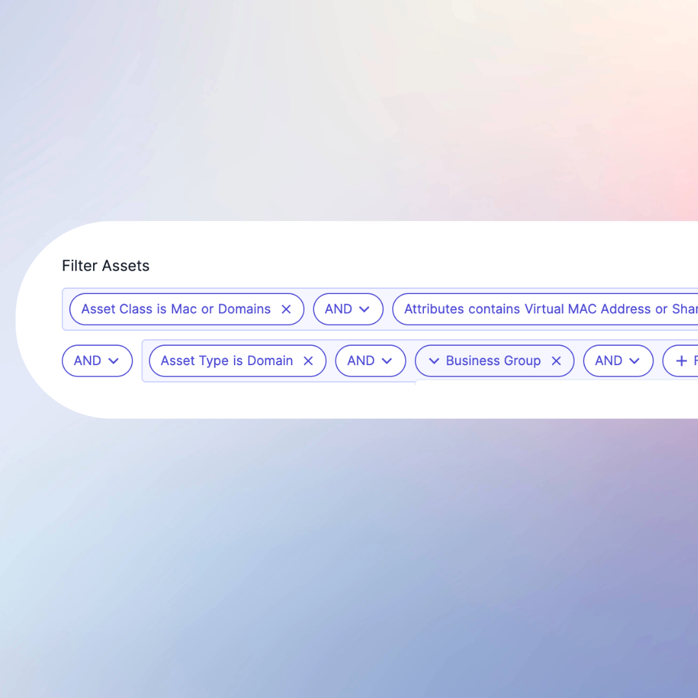
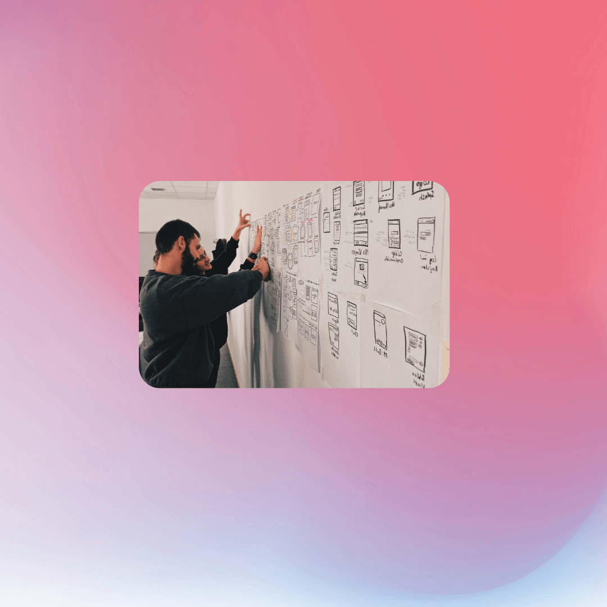
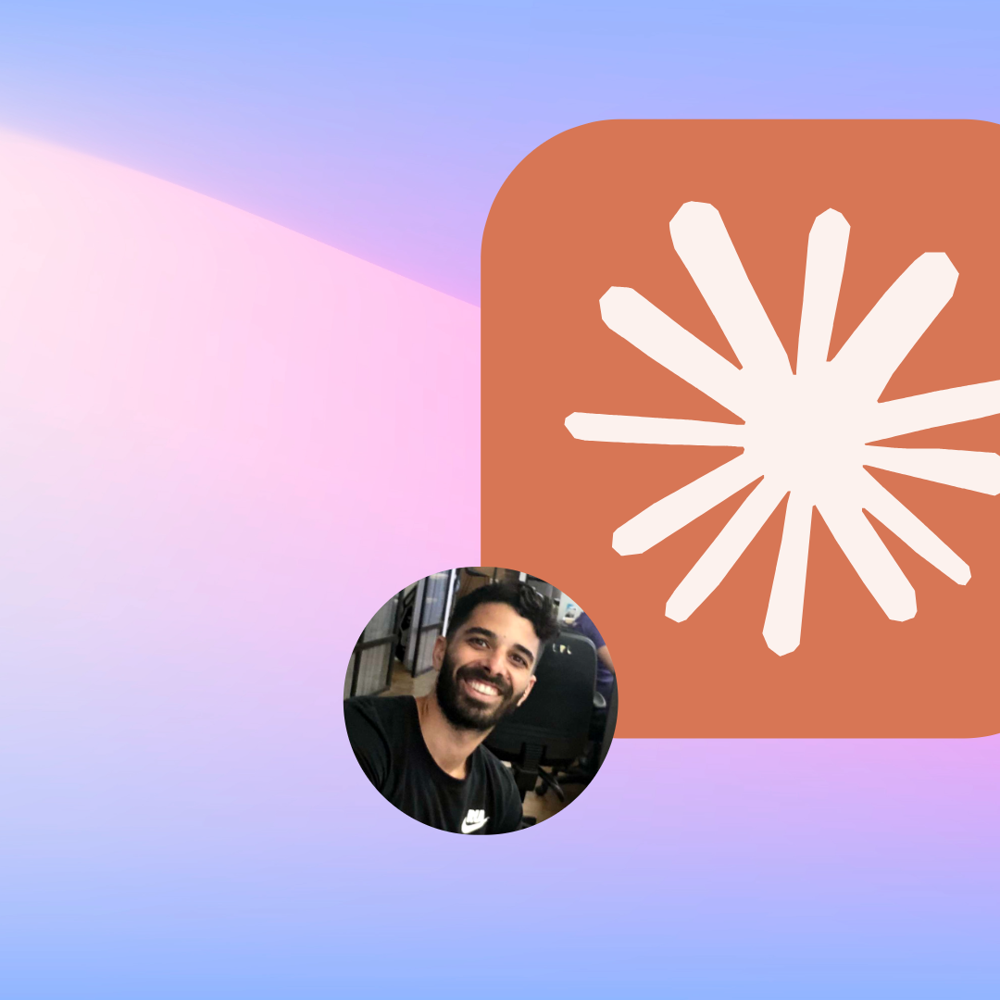

Shlomi Rozilyo
Senior Product Designer·Founding Designer @ Snyk·AI & Vibe Coding
I love turning complex, technical problems into clean designs that just make sense.
I'm a big believer in simplicity, taking dense, data-heavy workflows and shaping them into intuitive interfaces that feel light and easy to navigate.

AIAI-Driven Design Systems & Automated Prototyping
Bridging the gap between Figma, Notion, and Production Code
 UI/UX
UI/UXNagomi Vulnerabilities: From Data Noise to Risk-Based Action
Consolidating multi-scanner data into a prioritized remediation funnel.

UI/UXSnyk Code: Integrating Static Analysis into the Developer Workflow
Bridging the gap between the DeepCode acquisition and Snyk's core ecosystem.
 UI/UX
UI/UXDynamic Metrics & Custom Dashboards
Designing a modular framework for security posture tracking and executive reporting.

UI/UXAdvanced Asset Querying & Filtering
Building a logical, human-friendly interface for complex Boolean operations at scale.

ResearchResearch Strategy & Operations
Scaling user research and evidence-based decision making at Snyk.

Building This Portfolio with Claude AI
A designer-AI collaboration from Figma to deployment
Hi,%20I'm Shlomi! 👋
I've been a product designer for over a decade now. While most people run away from messy, complex technical problems, I'm the guy who actually enjoys them.
I was the Founding Designer at Snyk, where I spent 4 years helping turn a small startup into a unicorn. My main focus was making complicated developer tools feel simple and easy to use.
I take the work seriously, but I don't take myself too seriously. I'm a fan of honest talk, clear communication, and keeping things chill.